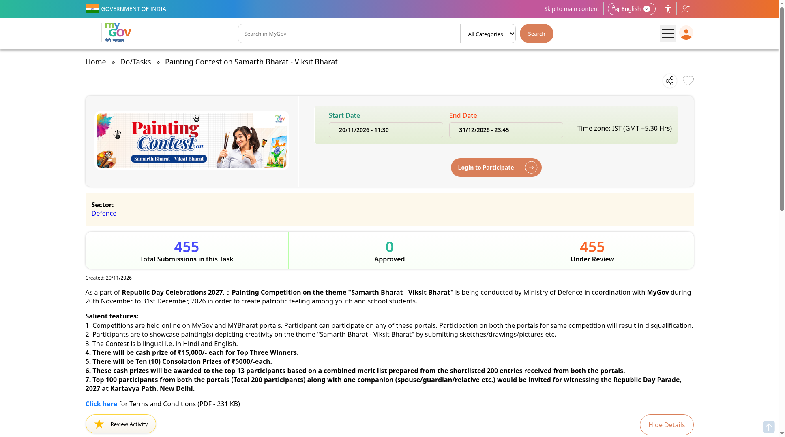
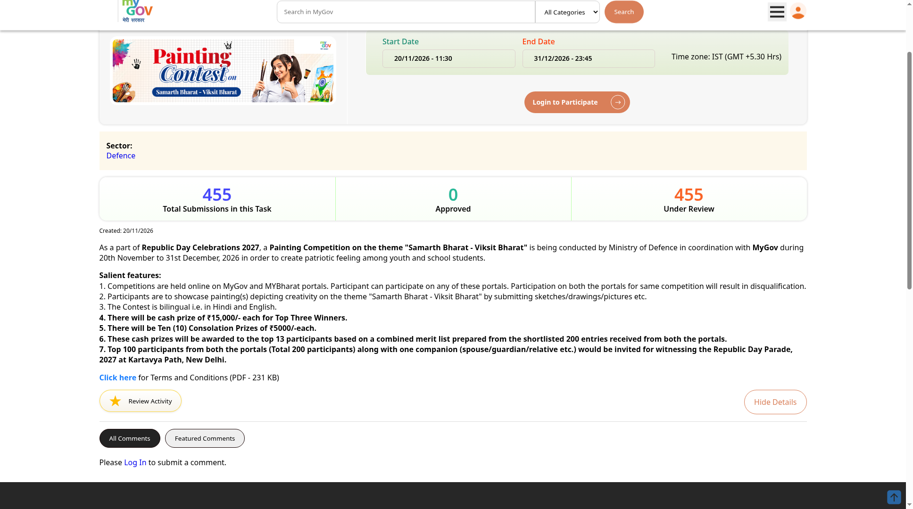
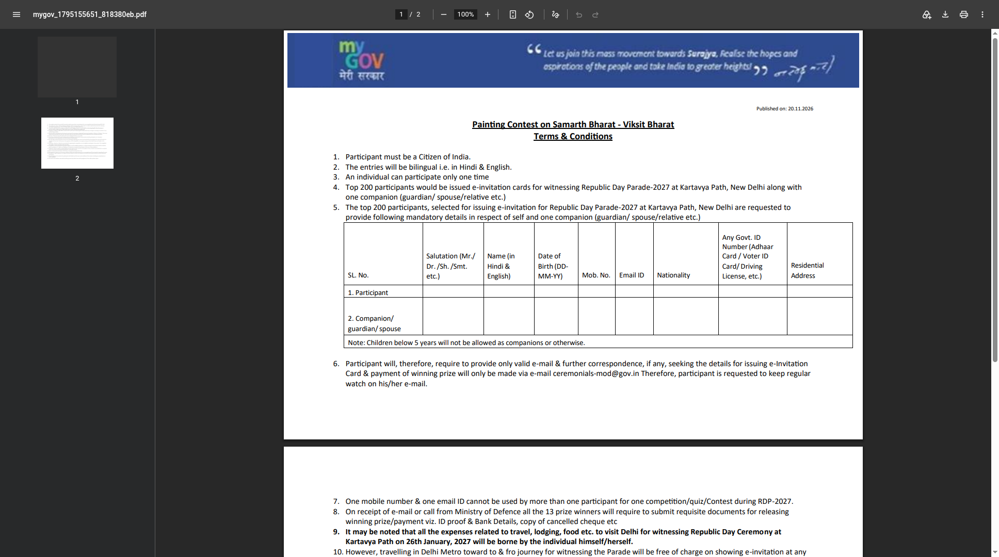
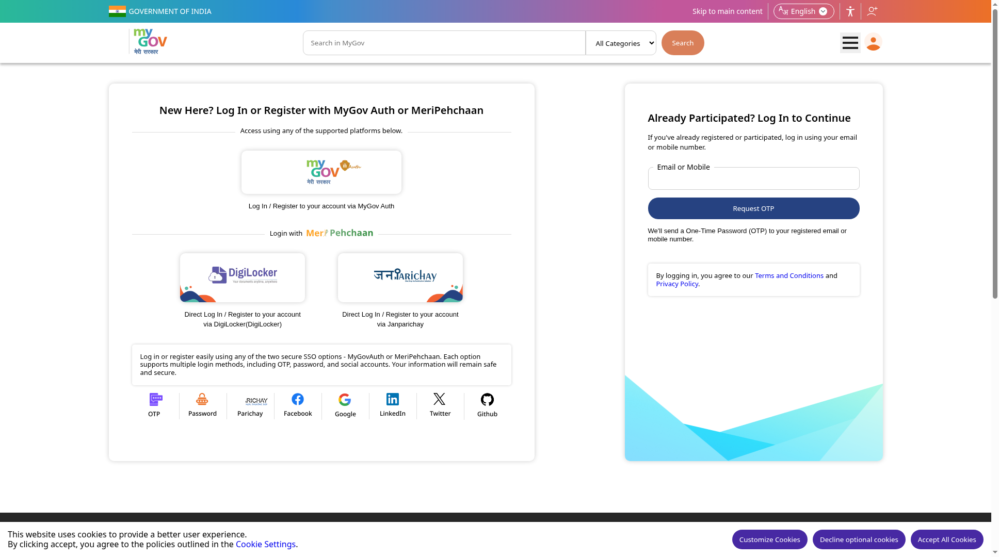

Samarth Bharat painting contest: ₹15,000 each for the top three
Indian citizens can enter the Ministry of Defence's Republic Day 2027 painting competition through MyGov or MYBharat. Ten consolation prizes of ₹5,000 each are also listed.
Open official painting contest ↗
What is the competition?
Create painting(s), sketches, drawings or pictures on Samarth Bharat - Viksit Bharat. This is a separate competition from the Viksit Bharat essay contest. The official brief describes it as Hindi/English bilingual. It does not establish a Malayalam submission option.

MyGov task, participation button and displayed closing time. Actual full-HD capture, 26 November 2026. Emblem marks masked; personal information not entered. Tap to enlarge.
Who can enter?
The terms require Indian citizenship, so Kerala entrants are within scope. The public terms do not state a general entrant age range; do not borrow one from another Republic Day contest. Employees directly or indirectly connected with organising the competition and their immediate family members are ineligible.
- An individual may participate only once.
- Choose MyGov OR MYBharat. Entering the same competition on both disqualifies you.
- One mobile number and one email ID cannot be used by more than one participant for this competition.
- Use your own original work. The terms require an undertaking about not using copyrighted material; without it, selection is void.
Prizes and parade invitations
The top three receive ₹15,000 each. Ten consolation winners receive ₹5,000 each. There is one combined merit list across both portals, not two separate sets of prizes. A shortlist of 200 entries feeds the combined award selection.
The announced top 200 participants, with one companion each, are invited to witness the Republic Day Parade on 26 January 2027 at Kartavya Path, New Delhi. Travel, lodging and food are at the individual's expense. The terms state that Delhi Metro travel to and from the parade is free on showing the e-invitation. Children below five are not allowed as companions or otherwise. This is not an all-expenses-paid trip.

Expanded official brief: theme, single-portal rule and cash prizes. Actual full-HD capture, 26 November 2026. Emblem marks masked; personal information not entered. Tap to enlarge.
1. Read the source mismatch before preparing the entry
MyGov's task deadline is Thursday, 31 December 2026, 11:45 PM IST. The MYBharat Republic Day landing page and event description also say 31 December. However, that event's activity-date block says Monday, 30 November 2026, 11:59 PM. Do not assume the later date applies to every portal. Check your chosen live entry route and seek organiser clarification if it conflicts.
The PDF is titled as painting terms, but clause 11 refers to screening essays and rejecting essays outside 500-600 words. We cannot tell whether text is required alongside artwork or whether this is a copied clause. We have not turned it into a painting word-count rule. The public documents do not settle file format, file-size ceiling, canvas dimensions, upload/link fields or this word-limit conflict. Ask the organiser to clarify these before committing your entry.

Actual official painting terms PDF: citizenship and parade-invitation details. Actual full-HD capture, 26 November 2026. Emblem marks masked; personal information not entered. Tap to enlarge.
2. Prepare the artwork and contact details
Keep an original clear digital copy of your own artwork. Do not assume a guessed JPG/PDF size or dimension is accepted. Read the actual form after login, check any instructions and get the disputed wording clarified. Use a valid email address and check it regularly.
If selected for an e-invitation, the terms ask for participant and companion details: salutation, name in Hindi/English, date of birth, mobile, email, nationality, a government ID number and residential address. The 13 prize winners may be asked for ID, bank details and a cancelled cheque. These are later verification requirements, not a reason to post ID or banking documents in public comments. The PDF lists a Ministry of Defence correspondence address; verify any unexpected request against the official source before sending sensitive documents.
3. Open the official participation route
- Open the MyGov painting task linked here, not the essay task.
- Select Show Details to read the full brief and open the Terms and Conditions PDF.
- Select Login to Participate. The blank live login page offers MyGov Auth/MeriPehchaan and an email/mobile OTP route for existing participants.
- Complete your own sign-in and profile checks. Never share your password or OTP.
- Follow the authenticated entry form only after checking its current file and content rules. Choose only this portal if you enter here.

Blank MyGov login and registration options. Actual full-HD capture, 26 November 2026. Emblem marks masked; personal information not entered. Tap to enlarge.
4. Submit only after the unresolved rules are clear
We inspected the public task, official PDF and blank login page, not an authenticated painting form. No login, OTP, upload or submission was attempted. The MYBharat page text was readable through the public source, but its browser view remained loading during capture, so it is not used as an application screenshot.
Check all fields, attach only what is asked for, keep the originality undertaking, and verify the final status after submission. Save any confirmation. The terms say proof of submission is not itself proof of receipt. Late, lost, incomplete or failed entries are not the organiser's responsibility. The screening committee's decision is final; terms may be amended, and disputes fall under Delhi jurisdiction.
Application videos
No reliable current-cycle full English or Malayalam submission walkthrough was verified in the searches checked. Screenshots here show only the public route. The post-login fields remain untested.
Official sources / ഔദ്യോഗിക രേഖകൾ
Samarth Bharat ചിത്രരചന: ആദ്യ മൂന്ന് പേർക്ക് ₹15,000 വീതം
2027 റിപ്പബ്ലിക് ദിനത്തോടനുബന്ധിച്ച് പ്രതിരോധ മന്ത്രാലയം നടത്തുന്ന ചിത്രരചനാ മത്സരത്തിൽ ഇന്ത്യൻ പൗരന്മാർക്ക് പങ്കെടുക്കാം. പത്ത് പേർക്ക് ₹5,000 വീതം പ്രോത്സാഹന സമ്മാനവുമുണ്ട്.
എന്താണ് മത്സരം?
Samarth Bharat - Viksit Bharat എന്ന വിഷയത്തിൽ painting, sketch, drawing, picture എന്നിവ സമർപ്പിക്കാനുള്ള മത്സരമാണ്. ഉപന്യാസമത്സരത്തിൽ നിന്ന് വ്യത്യസ്തമാണ്. ഹിന്ദി/ഇംഗ്ലീഷ് bilingual എന്നാണ് ഔദ്യോഗിക വിവരണം. മലയാളം സമർപ്പണം അനുവദിച്ചതായി രേഖ വ്യക്തമാക്കുന്നില്ല.
ഔദ്യോഗിക MyGov പേജും കാണിക്കുന്ന അവസാന സമയവും. Actual full-HD capture, 26 November 2026. Emblem marks masked; personal information not entered. Tap to enlarge.
ആർക്കൊക്കെ പങ്കെടുക്കാം?
ഇന്ത്യൻ പൗരന്മാർക്കാണ് അവസരം; കേരളത്തിലുള്ളവരും ഉൾപ്പെടും. പൊതുനിബന്ധനയിൽ അപേക്ഷകന്റെ പൊതുവായ പ്രായപരിധി നൽകിയിട്ടില്ല. മറ്റൊരു മത്സരത്തിലെ പ്രായനിയമം ഇതിന് ബാധകമാക്കരുത്. സംഘാടനവുമായി നേരിട്ടോ അല്ലാതെയോ ബന്ധപ്പെട്ട ജീവനക്കാർക്കും അവരുടെ അടുത്ത കുടുംബാംഗങ്ങൾക്കും പങ്കെടുക്കാനാവില്ല.
- ഒരാൾക്ക് ഒരിക്കൽ മാത്രം പങ്കെടുക്കാം.
- MyGov അല്ലെങ്കിൽ MYBharat മാത്രം തിരഞ്ഞെടുക്കുക. രണ്ടിലും ഒരേ മത്സരത്തിൽ പങ്കെടുത്താൽ അയോഗ്യത.
- ഈ മത്സരത്തിൽ ഒരേ മൊബൈൽ നമ്പറും ഇമെയിലും ഒന്നിലധികം പേർ ഉപയോഗിക്കരുത്.
- സ്വന്തം സൃഷ്ടി ഉപയോഗിക്കുക. Copyright ഉള്ള മറ്റുള്ളവരുടെ സൃഷ്ടി ഉപയോഗിച്ചിട്ടില്ലെന്ന undertaking വേണം; ഇല്ലെങ്കിൽ തിരഞ്ഞെടുപ്പ് അസാധുവാകും.
സമ്മാനവും പരേഡ് ക്ഷണവും
ആദ്യ മൂന്ന് പേർക്ക് ₹15,000 വീതം. പത്ത് പേർക്ക് ₹5,000 വീതം പ്രോത്സാഹന സമ്മാനം. രണ്ട് പോർട്ടലുകൾക്കും കൂടി ഒറ്റ merit list ആണ്; രണ്ട് സെറ്റ് സമ്മാനങ്ങളല്ല. 200 shortlisted എൻട്രികളിൽ നിന്നാണ് 13 സമ്മാനജേതാക്കളെ തിരഞ്ഞെടുക്കുക.
മികച്ച 200 പേർക്ക് ഒരൊറ്റ കൂട്ടാളിയോടൊപ്പം 2027 ജനുവരി 26ലെ കർത്തവ്യ പഥ് റിപ്പബ്ലിക് ദിന പരേഡ് കാണാൻ ക്ഷണം നൽകുമെന്നാണ് പ്രഖ്യാപനം. യാത്ര, താമസം, ഭക്ഷണം എന്നിവയുടെ ചെലവ് വ്യക്തി തന്നെ വഹിക്കണം. e-invitation കാണിച്ച് പരേഡിലേക്കും തിരിച്ചുമുള്ള Delhi Metro യാത്ര സൗജന്യമെന്നാണ് നിബന്ധന. അഞ്ച് വയസ്സിന് താഴെയുള്ള കുട്ടികളെ കൂട്ടാളിയായോ അല്ലാതെയോ അനുവദിക്കില്ല. ഇത് എല്ലാ ചെലവും വഹിക്കുന്ന യാത്രയല്ല.
വിഷയം, ഒറ്റ പോർട്ടൽ നിയമം, സമ്മാനം. Actual full-HD capture, 26 November 2026. Emblem marks masked; personal information not entered. Tap to enlarge.
1. രേഖകളിലെ വൈരുധ്യം ആദ്യം മനസ്സിലാക്കുക
MyGov പേജ് 2026 ഡിസംബർ 31 വ്യാഴം രാത്രി 11:45 IST എന്നാണ് കാണിക്കുന്നത്. MYBharat റിപ്പബ്ലിക് ദിന landing pageഉം event വിവരണവും ഡിസംബർ 31 പറയുന്നു. പക്ഷേ അതേ eventന്റെ activity-date ഭാഗം 2026 നവംബർ 30 തിങ്കൾ രാത്രി 11:59 എന്നാണ് പറയുന്നത്. എല്ലാ പോർട്ടലിനും പിന്നീടുള്ള തീയതി ബാധകമാണെന്ന് കരുതരുത്. തിരഞ്ഞെടുക്കുന്ന live entry route പരിശോധിച്ച് വൈരുധ്യമുണ്ടെങ്കിൽ സംഘാടകരോട് വ്യക്തത തേടുക.
Painting terms എന്ന് പേരുള്ള PDFയുടെ 11ാം വ്യവസ്ഥയിൽ 500-600 വാക്കുകൾക്ക് പുറത്തുള്ള essays സ്വീകരിക്കില്ലെന്നാണ്. ചിത്രം കൂടെ എഴുത്ത് വേണമെന്നാണോ, പകർത്തിയ തെറ്റാണോ എന്ന് സ്ഥിരീകരിച്ചിട്ടില്ല. ഇത് ചിത്രരചനയുടെ word-count നിയമമായി ഇവിടെ മാറ്റിയിട്ടില്ല. ഫയൽരൂപം, പരമാവധി വലുപ്പം, canvas അളവ്, upload/link field എന്നിവയും പൊതുരേഖകൾ തീർപ്പാക്കുന്നില്ല. സമർപ്പിക്കുന്നതിന് മുമ്പ് സംഘാടകരോട് വ്യക്തത നേടുക.
പൗരത്വവും പരേഡ് ക്ഷണവിവരവും ഉള്ള യഥാർത്ഥ PDF. Actual full-HD capture, 26 November 2026. Emblem marks masked; personal information not entered. Tap to enlarge.
2. സ്വന്തം ചിത്രവും വിവരങ്ങളും തയ്യാറാക്കുക
സ്വന്തം ചിത്രത്തിന്റെ വ്യക്തമായ digital copy സൂക്ഷിക്കുക. അനുമാനിച്ച JPG/PDF വലുപ്പമോ dimensionsഓ അംഗീകരിക്കുമെന്ന് കരുതരുത്. ലോഗിൻ ഫോമിലെ യഥാർത്ഥ നിർദേശങ്ങൾ പരിശോധിക്കുക. സാധുവായ ഇമെയിൽ നൽകുകയും പതിവായി പരിശോധിക്കുകയും വേണം.
പരേഡ് ക്ഷണത്തിന് തിരഞ്ഞെടുക്കപ്പെട്ടാൽ നിങ്ങളുടെയും കൂട്ടാളിയുടെയും salutation, ഹിന്ദി/ഇംഗ്ലീഷിലുള്ള പേര്, ജനനത്തീയതി, മൊബൈൽ, ഇമെയിൽ, പൗരത്വം, government ID നമ്പർ, താമസവിലാസം എന്നിവ ചോദിക്കാം. 13 സമ്മാനജേതാക്കളോട് ID, bank details, cancelled cheque എന്നിവയും ചോദിക്കാം. ഇവ പിന്നീട് ആവശ്യപ്പെടാവുന്ന verification വിവരങ്ങളാണ്; പൊതുകമന്റിൽ IDയോ ബാങ്ക് രേഖയോ ഇടരുത്. അപ്രതീക്ഷിതമായ രേഖാവശ്യങ്ങൾ ഔദ്യോഗിക ഉറവിടവുമായി പരിശോധിക്കുക.
3. ഔദ്യോഗിക സമർപ്പണവഴി തുറക്കുക
- ഇവിടെ നൽകിയ MyGov painting task തുറക്കുക; essay task അല്ലെന്ന് ഉറപ്പാക്കുക.
- Show Details തുറന്ന് വിവരണവും Terms and Conditions PDFയും വായിക്കുക.
- Login to Participate തിരഞ്ഞെടുക്കുക. MyGov Auth/MeriPehchaan സംവിധാനങ്ങളും നിലവിലെ ഉപയോക്താക്കൾക്കായി email/mobile OTP വഴിയും കാണുന്നു.
- സ്വന്തമായി ലോഗിൻ ചെയ്ത് പ്രൊഫൈൽ പരിശോധിക്കുക. OTPയോ പാസ്വേഡോ പങ്കിടരുത്.
- ഫോമിലെ പുതിയ ഫയൽ/ഉള്ളടക്കനിയമങ്ങൾ പരിശോധിച്ച് അതിലെ നിർദേശം മാത്രം പിന്തുടരുക. ഇവിടെ എൻട്രി നൽകിയാൽ മറ്റേ പോർട്ടലിൽ നൽകരുത്.
വിവരങ്ങൾ നിറയ്ക്കാത്ത MyGov ലോഗിൻ പേജ്. Actual full-HD capture, 26 November 2026. Emblem marks masked; personal information not entered. Tap to enlarge.
4. സംശയങ്ങൾ തീർന്നശേഷം മാത്രം അയയ്ക്കുക
പൊതുവായ പേജ്, PDF, blank login page എന്നിവ മാത്രമാണ് പരിശോധിച്ചത്. അക്കൗണ്ടിൽ പ്രവേശിച്ചിട്ടില്ല; OTP, upload, submission ഒന്നും ചെയ്തിട്ടില്ല. MYBharat eventന്റെ പൊതുവായ എഴുത്ത് വായിക്കാനായെങ്കിലും browser capture സമയത്ത് പേജ് loading നിലയിലായിരുന്നു. അതിനെ application screenshot ആയി ഉൾപ്പെടുത്തിയിട്ടില്ല.
ഫോമിലെ വിവരങ്ങളും artworkഉം undertakingഉം പരിശോധിച്ച് അയയ്ക്കുക. യഥാർത്ഥ status ഉറപ്പാക്കി confirmation സൂക്ഷിക്കുക. അയച്ചതിന്റെ തെളിവ് മാത്രം ലഭിച്ചതിന്റെ തെളിവല്ലെന്ന് നിബന്ധന പറയുന്നു. വൈകിയതോ അപൂർണ്ണമോ നഷ്ടപ്പെട്ടതോ സാങ്കേതികതടസ്സം നേരിട്ടതോ ആയ എൻട്രികളുടെ ഉത്തരവാദിത്വം സംഘാടകർ ഏറ്റെടുക്കുന്നില്ല. Screening committeeയുടെ തീരുമാനം അന്തിമമാണ്. നിബന്ധനകൾ പുതുക്കാം; തർക്കങ്ങൾക്ക് ഡൽഹി jurisdiction ആണ്.
അപേക്ഷാ വീഡിയോകൾ
ഈ മത്സരത്തിന്റെ നിലവിലെ വർഷത്തെ മുഴുവൻ സമർപ്പണവും കാണിക്കുന്ന വിശ്വസനീയമായ ഇംഗ്ലീഷ്/മലയാളം YouTube walkthrough പരിശോധിച്ച തിരച്ചിലിൽ സ്ഥിരീകരിക്കാനായില്ല. ഇവിടെ പൊതുവായ ഘട്ടങ്ങളുടെ ചിത്രങ്ങൾ മാത്രമാണ്. ലോഗിൻ ശേഷമുള്ള fields പരീക്ഷിച്ചിട്ടില്ല.